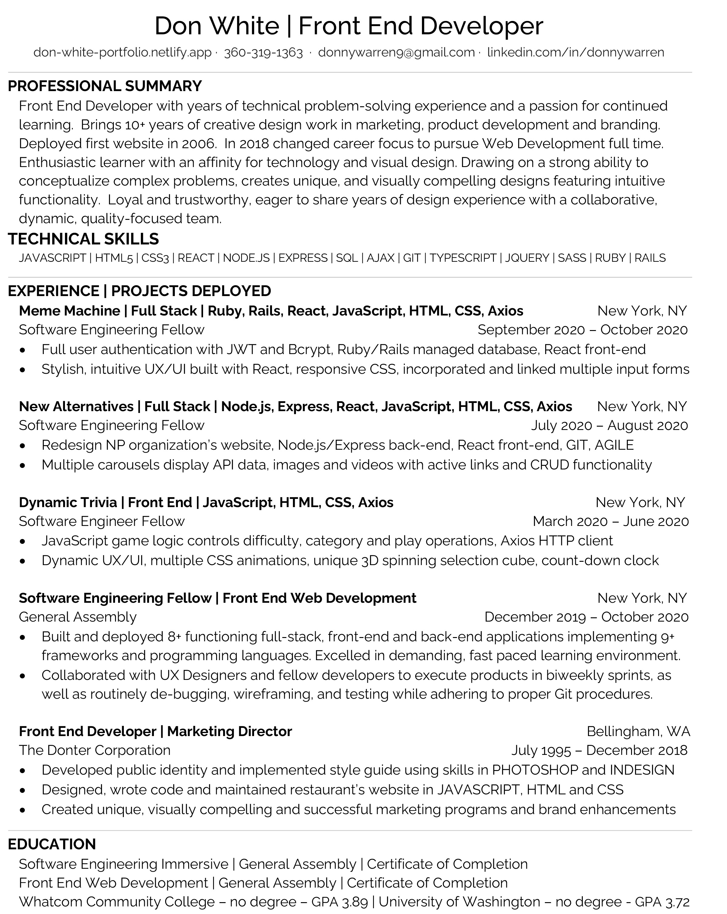

About Me

CLOSE
I am a Software Engineer who brings years of marketing, design and client support experience. The bigger the problem the more I want to solve it. I have a strong ability to conceptualize complex problems and then create solutions from code. My gift for self-learning and my ambitious nature guarantee I will keep up with new technologies necessary to solve tomorrow’s problems. I am loyal and trustworthy, so an investment in me is an investment in a long-term asset.